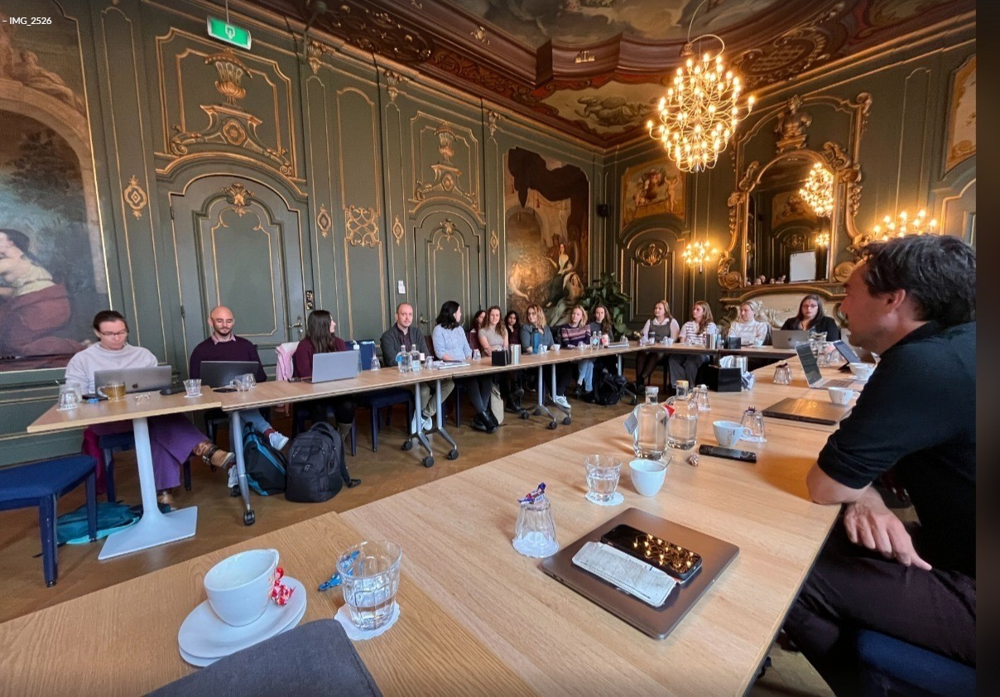
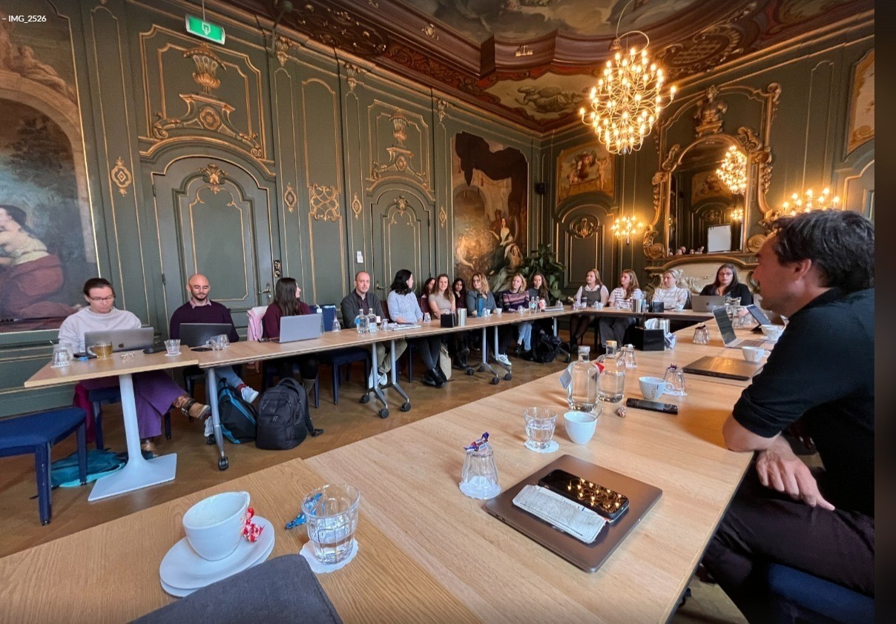

Radboud Ecological Momentary Assessment Center
The Radboud Ecological Momentary Assessment Center (REMAC) brings together researchers from across the Radboud campus (Donders Institute, Radboudumc, and Radboud University) working on intensive longitudinal data.
About Us
REMAC is a collaborative hub for scholars working with intensive longitudinal data. By connecting expertise across Radboud campus, we tackle scientific challenges related to study design, data processing, item selection, analysis, and open science practices. We support both fundamental and translational research, bridging the gap between academic insight and clinical implementation.
EMA
Ecological Momentary Assessment (EMA) allow researchers to collect real-time data on individuals’ mental and physical states as they go about their daily lives.
This approach provides deep insights into how these states change over time—both within and between individuals. Intensive longitudinal data is often gathered using smartphones and wearables, enabling researchers to track fluctuations in mood, behavior, or physiology in naturalistic settings.
As a result, EMA research opens up exciting opportunities to understand dynamic human processes as they unfold in context. At the same time, working with such rich and complex data introduces new scientific and methodological challenges.
What We Do
- Termly meetings for EMA-related project updates, research discussion, and strategic field developments.
- Workshops on timely topics such as data analysis, study design, and open science practices.
- Expert sessions with national and international leaders in the EMA field.
- Active support for joint grant applications and research innovation.